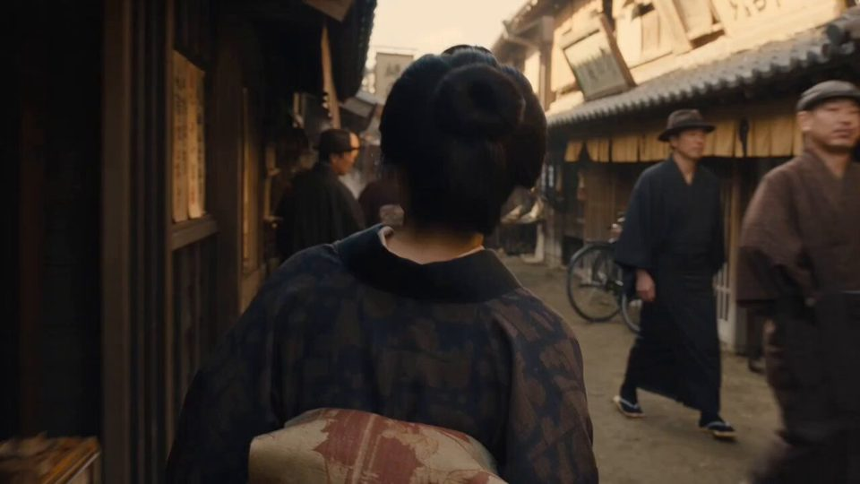

历史年代 · 视频
AI 视频生成模型（Seedance、Kling、Veo…）生成的单条短片。
 TikTok
TikTok永恒帝国
Other Realm · Midjourney + Higgsfield
写实电影感 赛博霓虹 欧洲 科幻
1920年代长镜头
el.cine
写实电影感 美式 历史年代
民国窗下读书人
Harboris · Seedance 2.5
写实电影感 中式 历史年代 日常生活
一九九〇外滩码头
underwood · Seedance 2.0
纪实手持 胶片复古 中式 历史年代
 X附提示词
X附提示词2004 年的翻盖手机
Johnn · Seedance 2.5
纪实手持 韩系 爱情青春 历史年代
五十年代的黑白日常
Johnn · Seedance 2.5
黑白影像 韩系 历史年代 日常生活

X附提示词1920年代大阪集市
Saul Goodman · Seedance 2.5
胶片复古 写实电影感 日系 历史年代
时停回溯的餐馆
TechHalla · Seedance 2.5
写实电影感 美式 历史年代
 X
X爱德华时代的新娘枪战
Shami · Seedance 2.5
写实电影感 欧洲 历史年代 武侠打斗
 X
X1974年的苏联夏天
Maria · Seedance 2.5
胶片复古 欧洲 历史年代 日常生活
 X
X维多利亚的草地梦
Maria · Seedance 2.5
写实电影感 欧洲 历史年代 时尚美妆
 X
X白教堂华尔兹
Timeless · Midjourney + Seedance 2.5
黑白影像 欧洲 历史年代 音乐舞蹈
 X
X消失的华沙
Maciej Dobrodziej · Seedance 2.5
黑白影像 欧洲 历史年代